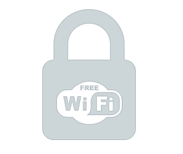

Are you frequently on the go and use public WiFis?

Phantom VPN minimizes the risks of unencrypted online activity
While free availability of WiFis is a wonderful thing, you absolutemy should be highly security conscious if oyu are going to use it for anything but the most trivial web surfing. These public hotspots are often open networks and are therefore completely unencrypted.
What can you do?
Learn how Phantom VPN protects you